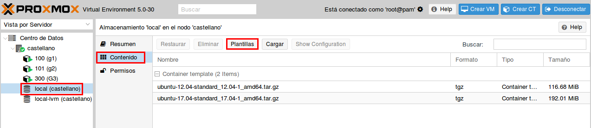
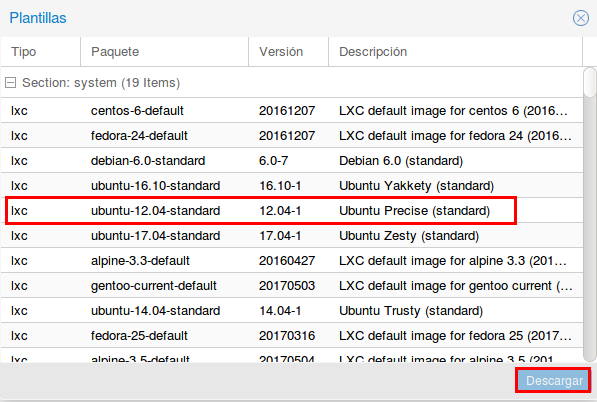
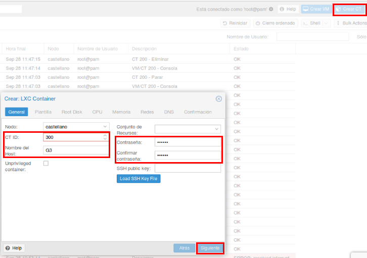
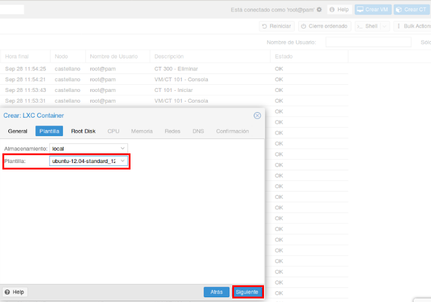
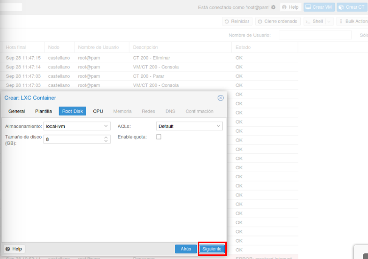
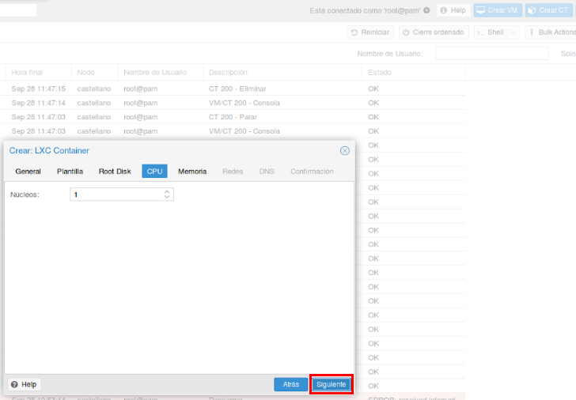
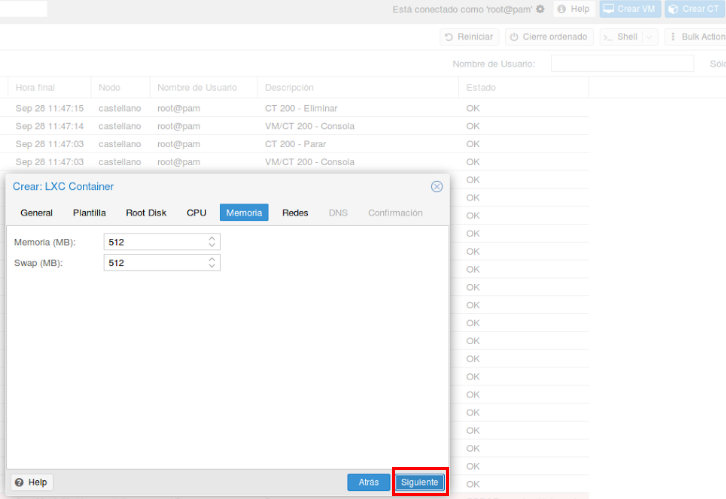
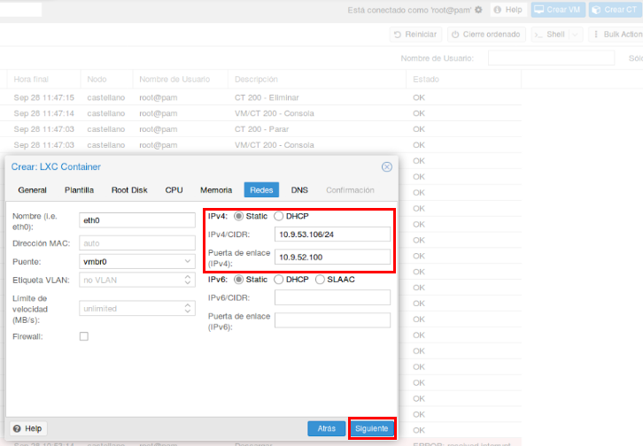
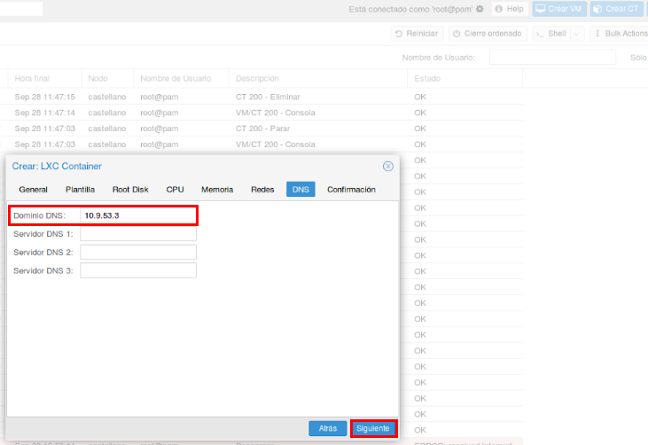
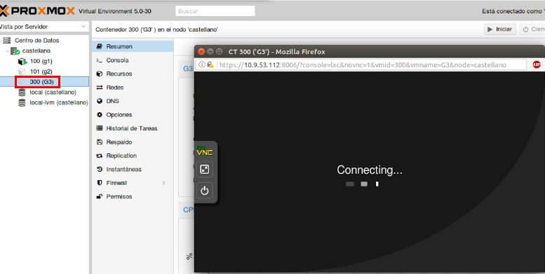

Configurar Proxmox
-
Instalar plantilla de máquina ubuntu server.
Vamos a “local(castellano)” → “Contenido” → “Plantillas”.
 -
Seleccionar plantilla.
Nos aparecerá una lista de versiones de ubuntu y entre todas seleccionamos la “12.04-1” → “Descargar”. Anteriormente lo hicimos con la versión “17.04-1” y como nos dió problemas al crear el contenedor decidimos usar esta otra.
 -
Crear contenedor.
Vamos a “Crear CT” → En la primera pestaña “General” rellenaremos el “ID”, el “Nombre del Host” y “Contraseña” → “Siguiente.
 -
Pestaña plantillas.
Seleccionaremos la que hemos instalado en el paso anterior → “Siguiente”.
 - En las siguientes capturas lo único que hay que hacer es darle a “Siguiente” ya que la configuración por defecto está a nuestro gusto.   
-
Pestaña redes.
Pondremos la “IPV4” y la “Puerta de enlace” → "Siguiente".
 -
Pestaña DNS.
Escribiremos el “Dominio DNS” → “Siguiente”.
 - Con esto ya habremos creado el contenedor, en el panel de la izquierda seleccionaremos el nuestro (300(G3)) y automáticamente se nos abrirá la máquina ubuntu. 